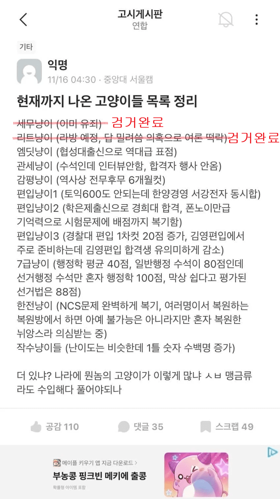
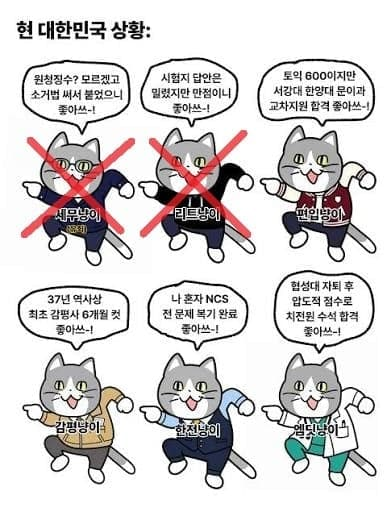
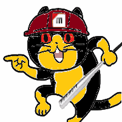
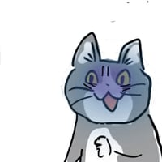
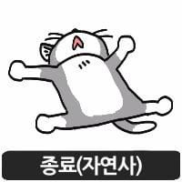

아


아
감평냥이 서울대 관련학과 석사출신 이라고 자백했대
일반적이지 않으면 ai인 것 같은 느낌임.
주기적으로 한번씩 나올 수 있는 것들이 아니면 말이야.
나머지도 다 잡아라 ㅋㅋㅋ 하나씩 잡다보면 올해는 심심할 틈이 없겠네

저 중에 감평냥이는 반박 인터뷰 했던데
6개월 컷이 애초에 자기가 최초가 아니고, 189명 중에 150등이라고
https://n.news.naver.com/mnews/article/015/0005355673?sid=102
애매하긴해. 6개월은 그냥 저 사람이 꺼드럭대고 싶어서 6개월이라 말한걸 수도 있음.
이미 서울대 석사잖아
토익600에서 900까지 올리는건 쉽긴한데 흠
살생부야?

감평냥이는 서울디니 관련학과기도 한거보면
6개월로 기간 좀 줄여서 비틱질좀 했는데 재수없게 얽혀들어간거같기도ㅋㅋ

대체 언제부터 주작질 해왔던건지 감도안오네 씨발
관종짓 하는 멍청이들은 화제라도 되지 조용히 티 안 나게 꿀 빠는 인간들은 사실상 문제될 일조차 없다는 게 가장 무서움
감평냥이랑 한전냥이는 아닌듯
아니 그래서 처벌을 어케할거냐고~
노무냥이는?
이제 학벌과 출신이 전부다
개천에서 용 나봐야 치터라고 의심할테니
지방출신, 일반고, 비명문대면 모든 노력이 부정당할 듯
어묵냥이좀 잡아라
리트냥이는 검거실패지 ㅋㅋㅋㅋ
쟤네는 검거 못하지 얼굴 까고 나댄 애들이 아니잖어
도파민이 마르질 읺는구만
얼굴안까고 나대지않으면 사실 잡기 쉽지않음
저 둘은 먼저 공개석상으로 올라왔잖아
노무냥이도 넣어줘
작년이랑 올해 수능, 각종시험 합격자들 전원 재검토 들어가야지